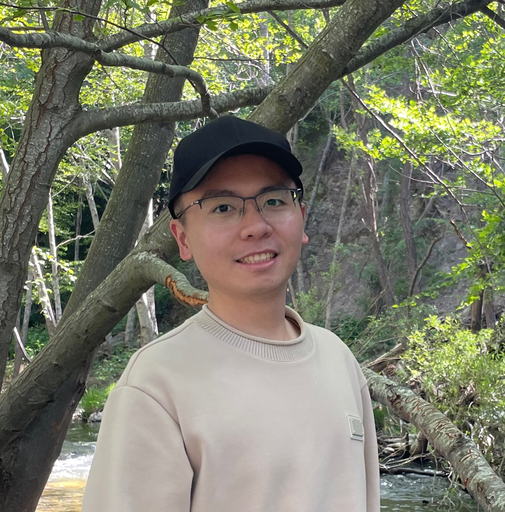

Ruichen Zhu

Summary
A self-learner and self-motivator, with growth mindset and progressive perspective.
Education
- Master of Science, Computer Science, San Francisco Bay University (2023-2024)
- Master of Science, Finance, Renmin University of China (2016-2019)
- Bachelor of Science, Applied Chemistry, Huazhong University of Science and Technology (2011-2015)
Work Experience
- Full Stack Engineer - Dianqu Technology
Oct 2022 - Dec 2022
- Implemented new features to make it more convenient for customers to search based on Javascript and the Django framework of Python, resulting in picking efficiency increased by 18%;
- Designed the database schema and tables, ensuring that they are scalable and flexible;
- Developed reusable and maintainable code following the principles of OOD to satisfy the requirement of customers;
- Integrated the back-end and front-end components of the application and guaranteed that the product was delivered on time
- Financial Analyst - Dongbei Security
Aug 2020 - Sep 2022
- Collected and processed data via Wind and Bloomberg; Extracted data using web crawling in Python;
- Calculated underlying assets book value, cash flow, ROE, IRR etc using public financial data;
- Analyzed financial data to finish monthly due diligence reports and 420-page annual report;
- Developed RDBMS to manage and analyze financial data, improving the data processing accuracy and efficiency of 15%
Skills
- Programming & Database: Python, Java, C++, SQL
- Coursework: Object-Oriented Design, Data Modeling and Implementation Techniques, Advanced Web Programming, Algorithms & Structured Programming
- Soft Skills: Presentation and Communication, Work Ethic, Critical Thinking, Curious, Feedback Driven
Certifications
- Completed CFA Level 1
- GMAT 710 (Top 10% Globally)
Other